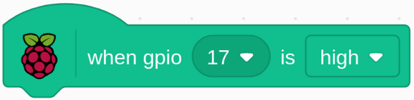
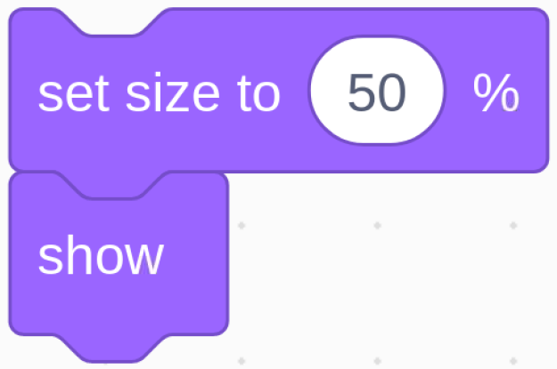

Note
Bonjour et bienvenue dans la communauté SunFounder Raspberry Pi & Arduino & ESP32 Enthusiasts sur Facebook ! Plongez plus profondément dans l’univers de Raspberry Pi, Arduino et ESP32 avec d’autres passionnés.
Pourquoi nous rejoindre ?
Support d’experts : Résolvez vos problèmes après-vente et vos défis techniques avec l’aide de notre communauté et de notre équipe.
Apprenez et partagez : Échangez des astuces et des tutoriels pour améliorer vos compétences.
Aperçus exclusifs : Accédez en avant-première aux annonces de nouveaux produits et aux avant-premières.
Réductions exclusives : Profitez de réductions exclusives sur nos nouveaux produits.
Promotions festives et cadeaux : Participez à des promotions et des cadeaux pendant les fêtes.
üëâ Pr√™t √† explorer et cr√©er avec nous ? Cliquez sur [Ici] et rejoignez-nous d√®s aujourd‚Äôhui !
1.9 Gonfler le ballon
Ici, nous allons jouer à un jeu de gonflage de ballon.
En basculant l’interrupteur à gauche, le ballon commence à se gonfler et il devient de plus en plus grand. Si le ballon devient trop gros, il éclatera ; s’il est trop petit, il ne flottera pas dans les airs. Vous devez juger du bon moment pour basculer l’interrupteur vers la droite pour arrêter de gonfler.

Composants nécessaires

Construisez le circuit
Chargez le code et voyez ce qui se passe
Chargez le fichier de code (1.9_inflating_the_balloon.sb3) dans Scratch 3.
En basculant l’interrupteur vers la gauche, le ballon commence à se gonfler et devient de plus en plus grand. Si le ballon devient trop gros, il éclatera ; s’il est trop petit, il ne flottera pas dans les airs. Vous devez juger du bon moment pour basculer l’interrupteur vers la droite pour arrêter de pomper.
Conseils sur le sprite
Supprimez le sprite précédent Sprite1, puis ajoutez le sprite Balloon1.

Un effet sonore d’explosion de ballon est utilisé dans ce projet, voyons comment il a été ajouté.
Cliquez sur l’option Son en haut, puis cliquez sur Téléverser un son pour téléverser boom.wav depuis le chemin davinci-kit-for-raspberry-pi/scratch/sound vers Scratch 3.

Conseils sur le code
{kind=link}
Ceci est un bloc d’événement, et la condition de déclenchement est que gpio17 soit à l’état haut, c’est-à-dire que l’interrupteur soit basculé vers la gauche.

Définissez la taille maximale du sprite Balloon1 à 120.

Déplacez les coordonnées du sprite Balloon1 à (0, 0), soit le centre de la scène.
{kind=link}
Réglez la taille du sprite Balloon1 à 50 et affichez-le sur la scène.

Mettez en place une boucle pour gonfler le ballon, cette boucle s’arrête lorsque l’interrupteur est basculé vers la droite.
Dans cette boucle, la taille du ballon augmente de 1 toutes les 0,1 seconde, et si elle dépasse maxSize, le ballon éclate, déclenchant alors le son d’explosion et le code se termine.
{kind=link}
Après la sortie de la dernière boucle (l’interrupteur bascule vers la droite), déterminez la position du sprite Balloon1 en fonction de sa taille. Si la taille du sprite Balloon1 est supérieure à 90, il décolle (déplacez les coordonnées à (0, 90)), sinon il atterrit (déplacez les coordonnées à (0, -149)).